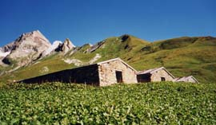

col d’Enclave (2672 m)

Départ : refuge des Mottets (1870 m)
Aller : 4,6 km, +800 m, 144 min
Retour : 6 km, + 30 et - 830 m, 112 min
Difficulté : E/EE
Période : juillet - septembre
Remarque : -
Bibliographie : -
Monter aux chalets de Bellaval par la piste pastorale passant au Gollier. Au lacet 2000, traverser le ruisseau et rejoindre l’ancien sentier de Maison Longe balisé en jaune.
Au dessus de Bellaval, le sentier remonte de plats pâturages jusqu’au fond du vallon dominé par la curieuse Grande Ecaille. Il devient vers 2200 m une sente bien cairnée, non balisée (un poteau à 2270 m), monte vers la barre rocheuse et la franchit par un bref parcours horizontal vers 2340. La sente devient rocailleuse (cairns plus rares) et traversée le torrent à 2440 m.
Monter alors au mieux sur un terrain facile (belles dalles lissées par l’érosion glaciaire) en direction du col au NE. On arrive au lac. Gagner un sentier bien tracé, balisé en bleu, qui remonte les éboulis du col.
Variante pour la descente : parvenu au lac, traverser NE sous la barre rocheuse pour parcourir en AR sur 700 m le chemin menant à la Grande Ecaille (balisé et cairné), afin de découvrir le cirque du glacier d’Enclave (au delà, il est réservé aux seuls alpinistes).
Photo : chalets de Bellaval, la Grande Ecaille